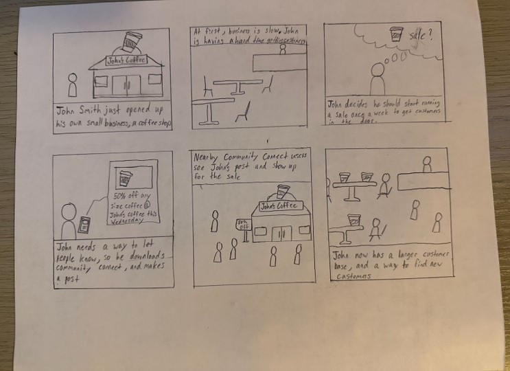
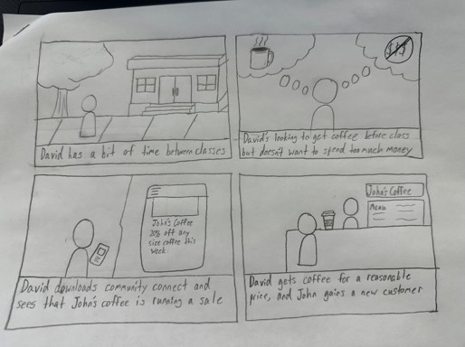
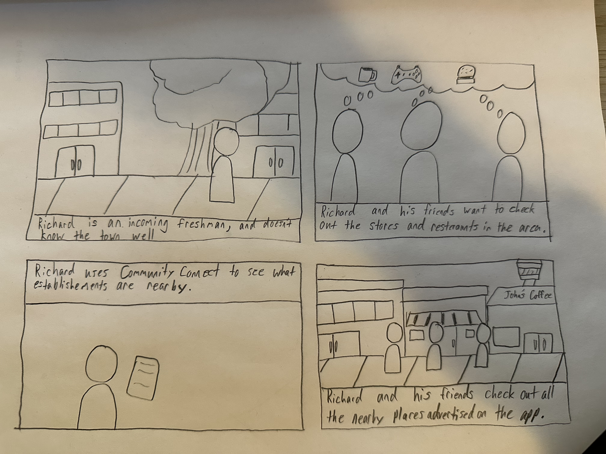

Our Project Goal
Community Connect aims to help small businesses connect with people in the nearby area, allowing them to gain new customer bases and for customers to find new places to shop, restaurants and cafes to dine at, and keep up to date with any deals with their favorite businesses.
User Personas and Storyboards

Storyboard 1 focuses on the User Persona John Smith, a man in his 30s who recently opened a coffee shop. In order to, build a customer base, he downloads Community Connect, and makes a post advertising a sale. People in the area see it and come to his coffee shop. Thanks to Community Connect, he now has many customers who come in regularly.

Storyboard 2 focuses on a Junior year Engineering student named David. David is generally busy and on a budget, so he downloads Community Connect to see if there are any deals on coffee in the area. He sees a post advertising a sale at John’s Coffee, and decides to go between classes. David gets coffee at a reasonable price and John gets a new customer.

Storyboard 3 focuses on an incoming Freshman named Richard. He’s looking to check out the shops and restaurants in the area with his friends. So, he downloads Community Connect and checks out all the places advertised nearby on Community Connect.